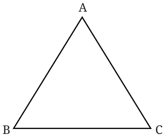
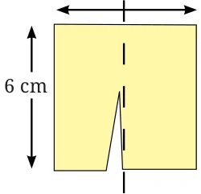
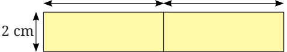
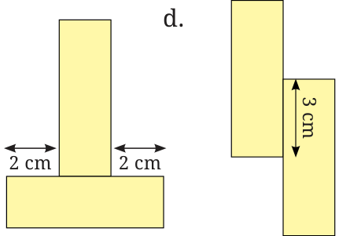
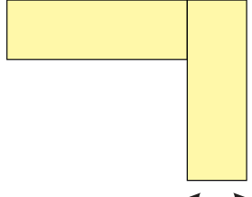

Like squares, closed figures that have all sides and all angles equal are called regular polygons. We studied the sequence of regular polygons as 'Shape Sequence' #1 in Chapter 1. Examples of regular polygons are the equilateral triangle (where all three sides and all three angles are equal), regular pentagon (where all five sides and all five angles are equal), etc.
Perimeter of an equilateral triangle

We know that for any triangle its perimeter is sum of all three sides.
Using this understanding, we can find the perimeter of an equilateral triangle.
Perimeter of an equilateral triangle
\(= AB + BC + AC = AB + AB + AB\)
\(= 3 \times\) length of one side.
Perimeter of an equilateral triangle \(= 3 \times\) length of a side.
What is a similarity between a square and an equilateral triangle?
Find various objects from your surroundings that have regular shapes and find their perimeters. Also, generalise your understanding for the perimeter of other regular polygons.
Teacher's Note
Discuss more about regular polygons and encourage students to come up with a general formula for the perimeter of a regular polygon.
Split and rejoin

A rectangular paper chit of dimension \(6 \text{ cm} \times 4 \text{ cm}\) is cut as shown into two equal pieces. These two pieces are joined in different ways.
a.

For example, the arrangement a. has a perimeter of 28 cm.
Find out the length of the boundary (i.e., the perimeter) of each of the other arrangements below.


Arrange the two pieces to form a figure with a perimeter of 22 cm.